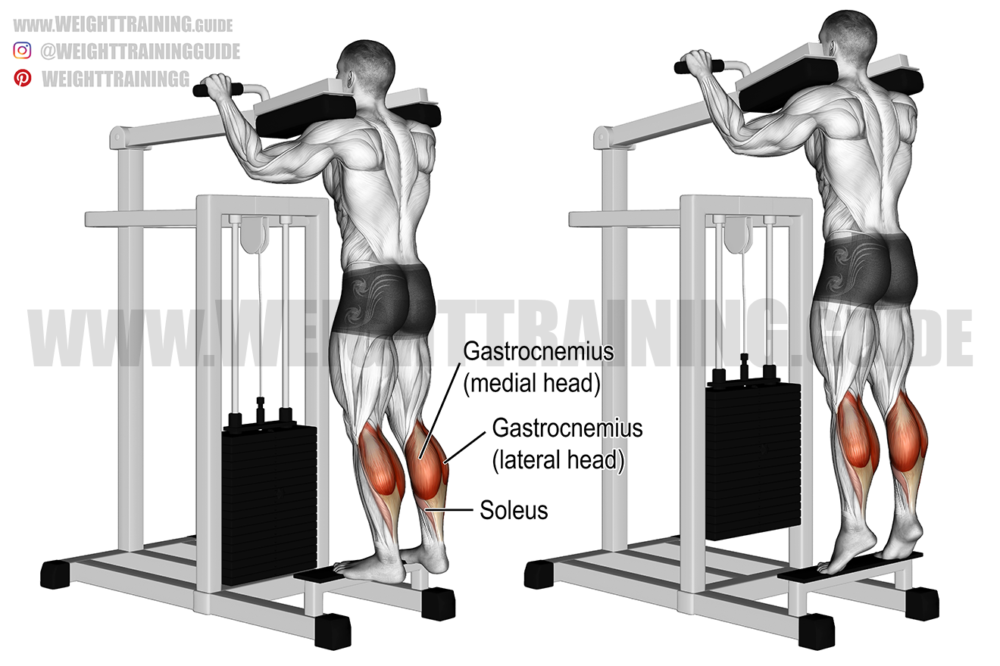
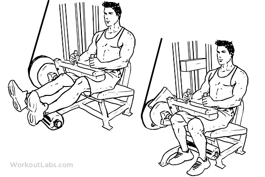
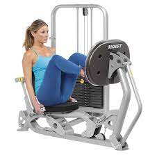
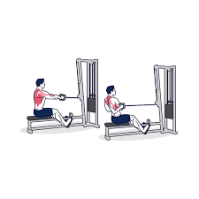
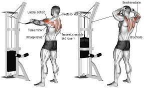
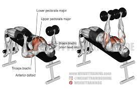
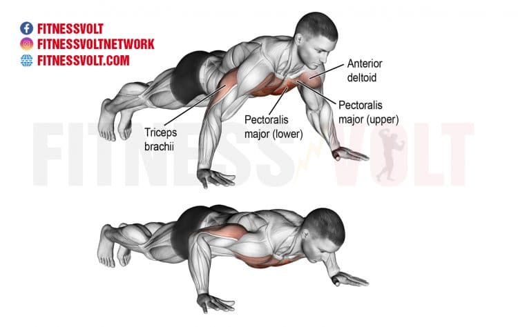
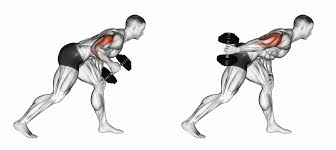
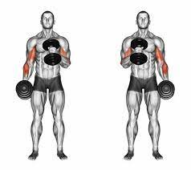

Workout Day 1: Legs
Calf Raises 3 Sets of 10- these are a great and easy way to work the calf muscles. Start by selecting the appropriate weight (Lighter is better until you're more comfortable). Line up the balls of your feet and your shoulders to the pads. When ready press down on the pad with the balls of your feet and push upward
Tip: Try to use more of the leg muscles than your knees. Using the knees in the motion can cause injury.
Seated Leg Curls 3 Sets of 10 - a simple movement to help work out the hamstrings and glutes. Start by adjusting the machine to your preferred weight and leg space. Pull the machine lever as far as possible to the back of your thighs by flexing at the knees. Keep your torso stationary at all times. Hold the contracted position for a second.
Tips on Seated Leg Curl: Leg Curls

Hamstring Curls 3 Sets of 10 - another great movement to help strengthen the hamstrings. Start by adjusting to the desired weight. Lay on your back and place legs hanging down. Push the bar up and repeat.
Leg Press 3 sets of 10 -targets the quadriceps and glutes. Adjust the chair so that it leaves a slight bend from the knees. Adjust the weight and then push with your legs, making sure to keep the torso rigid.
Tips on Leg Press : Leg Press
Workout Day 2: Back

Front Lat Pulldown 3 sets of 10 - this motion is great for working the lower back. Start by adjusting the weight to the desired amount. Then grip the bar with both hands and pull the bar down focusing on contracting the back muscles
Rows 3 Sets of 10 - another great motion designated for the lower back. Grab the handle with both hands and sit in a position where your knees are slightly bent. Pull back with both hands and return to normal position

One arm Dumbbell Rows 3 Sets of 10 - These help to isolate the back muscles on either side. Grab a dumbell and using a bench to remain in a bent over position. Lift the dumbell up towards the chest and then back down
Tips on One Arm Rows : Dumbbell Rows
Workout Day 3: Shoulder
Face Pulls 3 sets of 10 - a great movement to target the shoulders and help improve both strengh and stability. Using the rope attachment(see image), grab both ends and pull towards the crown of your head.
Tips on Face Pulls : Face Pulls

Shoulder Press w Dumbells 3 Sets of 10 - grab some dumbells and using a bench, sit down with your feet planted firmly on the ground. Bring the dumbells to the top of your chest and push up until the dumbells go over your head.
Tips on Shoulder Press: Shoulder Press

Front Shoulder Raises 3 Sets of 10 - Hold the dumbbells in front of your thighs. This will be the starting position. Raise them up again to the front, then down to the starting position.

Lateral Raises 3 sets of 10 - For these you will start the same way you started the Front Raises. Start by raising the dumbbells forward, then out to the sides, then bring them down to the side.
Workout Day 4: Chest

Pec Deck/Fly 3 sets of 10 - Grab the handles so that your palms are facing forward. Press your arms together in front of your chest with a slow, controlled movement. Bring the arms slwoly back to the starting position
Dumbbell Press 3 Sets of 10 - Grab a pair of dumbbells and lay down on a bench. Let the dumbbells line up with your chest. Push the weight up and then bring it back down towards your chest.
Tips on Dumbbell Press: Dumbbell Press

Incline Dumbell Press 3 Sets of 10 - This is a variation of the of the dumbbell press meant to work the upper chest. Raise the bench you previously used until its on an incline. Follow the same motion as before focusing on the contraction of the upper chest.
Tips on Incline Dumbbell Press : Incline Dumbbell Press
Push Ups 3 sets of 10 - Get down in plank position. Using your arms, push down until your chest gets close to floor. Then using your arms, push back up until you return to the plank position
Workout Day 5: Biceps/Triceps

Tricep Cable Pushdown 3 sets of 10 - with a rope attachment, grab it with both hands. Push down until your elbows are fully extended but not yet in the straight, locked position. Keep your elbows close to your body and bend your knees slightly on the pushdown. Return to the rest position
Tip:Resist bending forward. It may seem like you can pull more but instead you'll be targeting more of your back and shoulders rather than your tricep.
Tricep Kickbacks 3 Sets of 10 - Hold a dumbbell in each hand with your palms facing in toward each other, keeping your knees bent slightly. On an exhale, engage your triceps by straightening your elbows. Hold your upper arms still, only moving your forearms during this movement.
Tips on Tricep Kickbacks : Tricep Kickbacks

Bicep Curls 3 Sets of 10 - Hold a pair of dumbbells in each hand.Keeping your upper arms stable and shoulders relaxed, bend at the elbow and lift the weights so that the dumbbells approach your shoulders. Your elbows should stay tucked in close to your ribs.
Tips on Bicep Curls : Bicep Curls
Hammer Curls 3 Sets of 10 - Hold on to the same pair of dumbbells. Bend at the elbow, lifting the lower arms to pull the weights toward the shoulders. Your upper arms are stationary and the wrists are in line with the forearms. Return to the starting position and repeat
Cardio:
Cardio can be a great asset for any workout as it aids in blood circulation and calorie burning. If you desire to add cardio to your workout here are some suggestions.
- Treadmill 4 -5 speed for 10 minutes
- Bike 10 minutes
- Eliptical 10 minutes